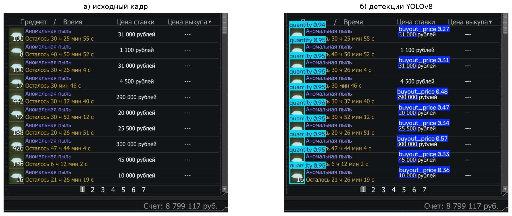
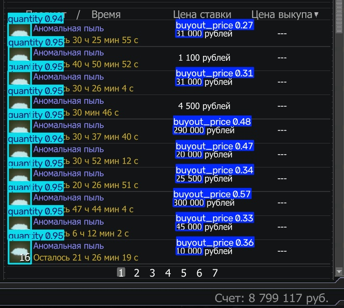
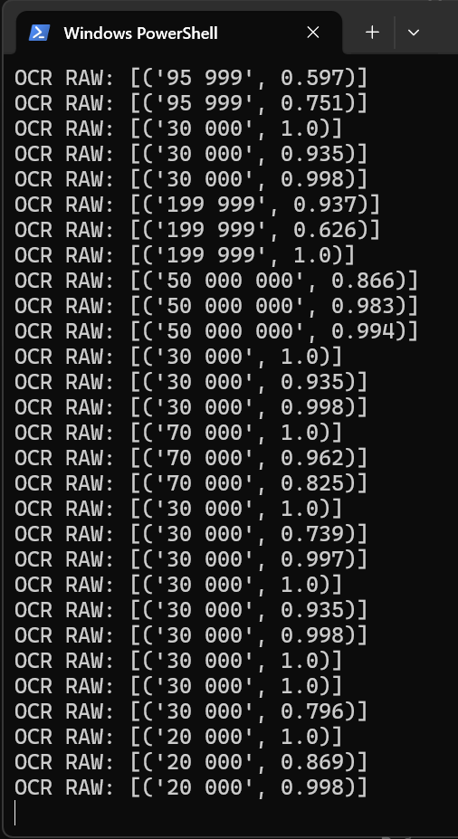

01Автозакупка лотов на аукционе
Настольный бот, который сам находит выгодные лоты на внутриигровом аукционе и выкупает их. Смотрит на экран через компьютерное зрение: модель YOLO находит бейджи количества и цены, собственный OCR читает числа, после чего бот принимает решение о покупке и кликает сам. Написан как курсовая работа и доведён до рабочего инструмента.
8 600
строк кода
19/19
юнит-тестов проходят
26/26
эталонов OCR распознано
0
ложных покупок на 720 проверках
Что умеет
- Находит лоты дешевле заданного порога и покупает самый выгодный
- Читает количество и цену с экрана: шаблоны цифр + EasyOCR с перекрёстной проверкой
- Не покупает чужой лот: сверяет строку прямо перед кликом, кнопка нажимается только своей строки
- Экстренная остановка по Esc и по горячей клавише, лимиты по цене и количеству
- Журнал покупок, остаток товара, баланс до и после запуска
- Калибровка областей экрана через интерфейс, работает с любой раскладкой таблицы
PythonYOLOv8EasyOCR
OpenCVNumPyTkinter
msspyautoguipytestGit
Сложности и решения
- Цифры на иконках в разных цветах и масштабах - собрал библиотеку эталонов и алгоритм их пополнения
- OCR часто ошибался на искажённых кропах - добавил двойное чтение и голосование, отказ при расхождении
- Таблица пересортировывалась между анализом и кликом - сверка строки перед нажатием
- Кнопка выкупа обрезалась у нижнего края - прокрутка с ограничением попыток
- Модель промахивалась - разметил датасет, дообучил, довёл точность до рабочей






Результат: законченный продукт с интерфейсом, тестами и документацией.
Курсовая работа защищена, бот используется как рабочий инструмент.
Каждая строка кода покрыта автотестами или проверками на реальных кадрах.
Ссылки:
GitHub-репо: TODO URL
TODO: статус репо (приватное - репо приватное, код по запросу)